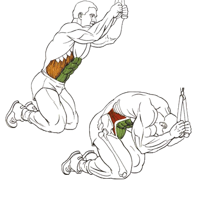

Упражнение на верхнюю часть пресса.
Исходное положение:
Встаньте лицом (или спиной) к блочному тренажёру и возьмитесь за канат, прикрепленный к верхнему блоку.
Опуститесь на колени
Наклонитесь вперед и немного выгните спину, тело почти параллельно полу, руки согнуты в локтях, подбородок касается груди.
Техника выполнения:
С помощью мышц пресса опуститесь вниз, пока локти не коснутся бёдер, спина при этом должна быть скруглена.
На вдохе вернитесь в исходное положение.
Рекомендации:
Вес должен быть достаточным, но не слишком тяжёлым (начните с небольшого отягощения и увеличивайте по мере необходимости).
Таз должен оставаться неподвижным.